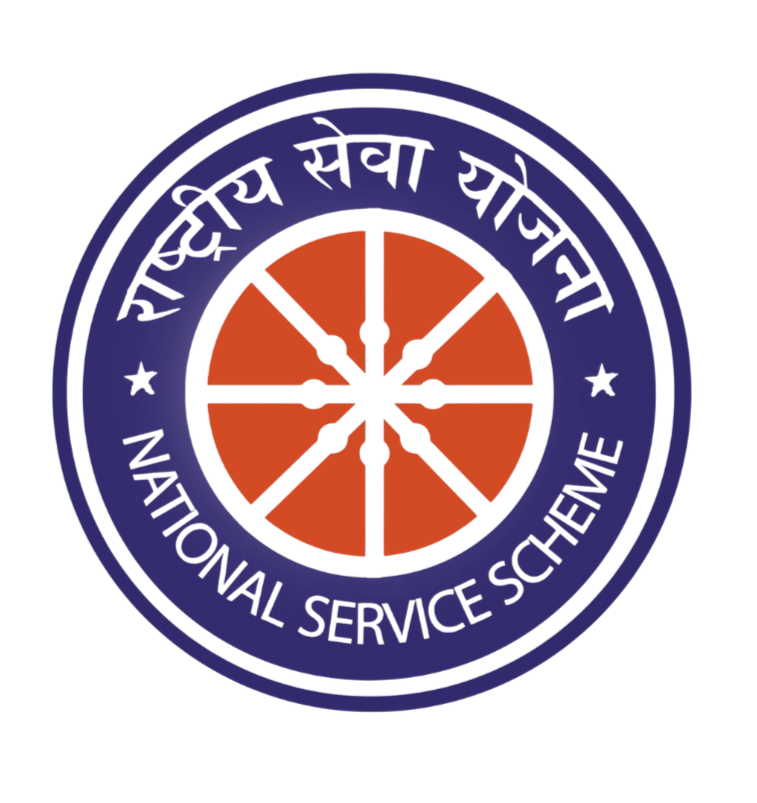
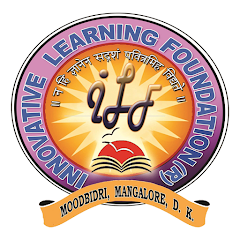
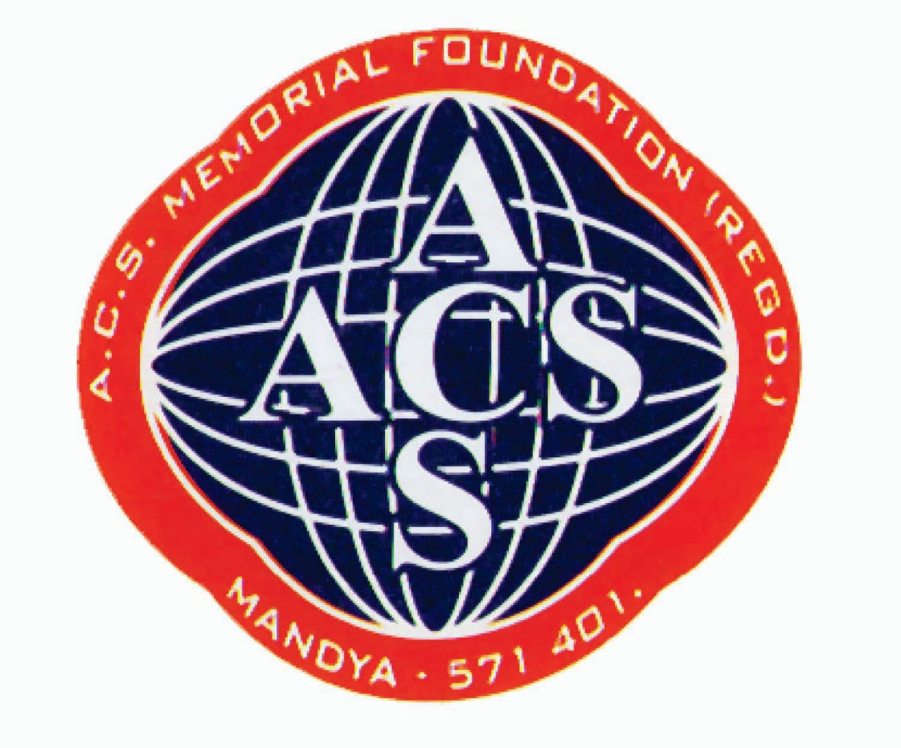

Hello, It's Me
Prajwal S Shetty
And I'm a Cybersecurity Enthusiast
I am a Computer Science Engineering student passionate about cybersecurity, technology, and leadership. I balance both physical and intellectual challenges, applying discipline, problem-solving, and resilience to turn real-world problems into effective solutions.
About Me
I am a Computer Science Engineering student passionate about cybersecurity, technology, and leadership. Based in Mandya, Karnataka, India, I actively work to expand my technical skills and industry knowledge.
I balance both physical and intellectual challenges, bringing discipline, teamwork, and resilience from sports into the world of technology. I enjoy solving complex problems and continuously improving my technical and leadership abilities.
My Skills
Cybersecurity
Problem Solving
Leadership
Sketching
Sports & Teamwork
Projects
Password Strength Analyzer
Built a password strength analyzer to evaluate password security based on length, character complexity, and entropy. The tool helps identify weak passwords and promotes secure authentication practices by providing real-time feedback.
Key Features:
- Evaluates password length and complexity
- Detects weak or common password patterns
- Provides user-friendly strength feedback
- Encourages secure authentication practices
Sports & Extracurricular
VTU Inter-Collegiate Zonal Tournament
Basketball (Men) - Mysuru DivisionRepresented PES College of Engineering, Mandya in the VTU Inter-Collegiate Zonal Basketball Tournament (Mysuru Division). This experience strengthened my teamwork, discipline, leadership, and ability to perform under pressure—skills that strongly complement my academic and technical journey in computer science and cybersecurity.
Experience & Positions
President
June 2025 – PresentYouth Red Cross Wing (YRCW), PESCE

President
June 2025 – PresentNational Service Scheme (NSS) – PESCE
Core Member
June 2023 – PresentISTE PESCE
Organizer
June 2023 - June 2024ISTE - PESCE
Education
Bachelor of Engineering (CSE)
PES College of Engineering, Mandya
2022 – 2026
PUC (PCMB)
Excellent PU College, Moodbidri
2020 – 2022
SSLC
22nd Century Public School, Mandya
2019 – 2020Certifications
Get In Touch
Feel free to reach out for collaborations or just a friendly hello.
prajwalsshetty96@gmail.com LinkedIn Profile
Social Service & Volunteering
Volunteering Experience
VolunteerOrganization: NSS & YRCW, PES College of Engineering
Date: 30 Oct 2025
Actively contributed to community service initiatives, including blood donation camps, donor coordination, and student-led outreach programs.
Blood Donation
3 Donations (B+ve)Organization: NSS & YRCW, PES College of Engineering, Mandya
Donated blood on three occasions, supporting medical emergencies.
Click a date to view its certificate
Walk for Humanity
Community ParticipantOrganization: Indian Red Cross Society
Date: 21 Sep 2024
Joined the "Walk for Humanity" to raise awareness for peace and community solidarity during World Peace Day 2024.
Event Volunteering
19th ISTE Student ConventionOrganization: ISTE Karnataka
Date: 7 June 2024
Facilitated event coordination and guided participants for the 19th ISTE State-Level Student Convention, ensuring seamless execution.